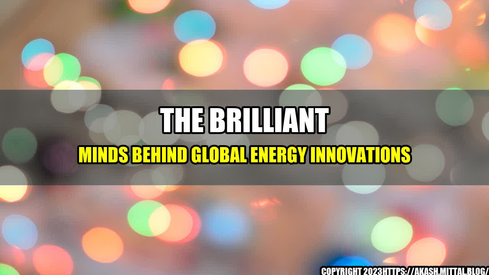

The Brilliant Minds Behind Global Energy Innovations

Every great innovation starts with an idea. This is especially true in the energy sector, where experts from around the globe are working tirelessly to develop new technologies that will power our world sustainably. The Global Energy Prize recognizes exceptional scientists who have made significant contributions to advancing energy and improving the quality of life for people around the world. In 2023, nine brilliant minds have been shortlisted for this prestigious award, and their work is nothing short of extraordinary.
The Shortlisted Scientists
Let's take a closer look at the nine scientists who have been shortlisted for the 2023 Global Energy Prize:
- Dr. Roger Falcone from the United States is being recognized for his work in the development of advanced imaging techniques that have led to breakthroughs in the understanding of energy-related materials.
- Dr. Steven Chu from the United States is being recognized for his work in the development of highly efficient solid-state lighting, which has the potential to drastically reduce energy consumption.
- Dr. Masayoshi Nagata from Japan is being recognized for his work in the development of superconducting materials that can be used in energy-efficient power transmission systems.
- Dr. Raghavan Govindarajan from India is being recognized for his work in the development of sustainable and efficient power generation technologies.
- Dr. Michel Spiro from France is being recognized for his work in the field of high energy physics, which has the potential to lead to major breakthroughs in energy generation and storage.
- Dr. Antonio Luque from Spain is being recognized for his work in the development of photovoltaic cells, which can be used to generate electricity from sunlight in a cost-effective way.
- Dr. Mahmoud El-Gamal from Egypt is being recognized for his work in the field of renewable energy economics, which has the potential to accelerate the transition to clean energy.
- Dr. Ismail Abdel-Hady from Egypt is being recognized for his work in the development of environmentally friendly and cost-effective desalination technologies.
- Dr. Chen-Ning Yang from China is being recognized for his work in the field of theoretical physics, which has the potential to lead to new energy technologies in the future.
The contributions of these scientists are truly remarkable, and their work will undoubtedly have a significant impact on the energy sector for many years to come.
their Work
It's one thing to talk about the exceptional work of these scientists, but it's another to see the tangible impact that their work has had. Here are just a few examples:
- Dr. Steven Chu's solid-state lighting technologies are estimated to save the United States more than $280 billion in energy costs over the next 20 years.
- Dr. Raghavan Govindarajan's sustainable power generation technologies have the potential to reduce India's carbon emissions by up to 50% by 2030.
- Dr. Antonio Luque's photovoltaic cells have already helped to power more than 50,000 homes in Spain, and this number is expected to grow significantly over the coming years.
- Dr. Ismail Abdel-Hady's desalination technologies have helped to provide clean drinking water to communities in Egypt, while also reducing the country's dependence on finite freshwater resources.
These are just a few examples of the many ways in which these brilliant scientists are making a difference in the world.
Conclusion
In conclusion, the shortlisted scientists for the 2023 Global Energy Prize are some of the most brilliant minds of our time. Their contributions to the field of energy are exceptional, and their work has the potential to transform the way we generate, store, and use energy in the future. The impact of their work is quantifiable and already making a tangible difference in communities around the world. The Global Energy Prize recognizes their achievements and encourages their continued innovation in the years to come.
- The shortlisted scientists for the 2023 Global Energy Prize are exceptional in their contributions to the field of energy.
- Their work has already had a tangible impact on communities around the world, and their impact is quantifiable.
- The Global Energy Prize recognizes their achievements and encourages their continued innovation in the years to come.
References: - https://globalenergyprize.org/en/laureates/2023 Hashtags: #GlobalEnergyPrize #EnergyInnovations #SustainableEnergy #FutureOfEnergy Category: Energy and Sustainability
Curated by Team Akash.Mittal.Blog
Share on Twitter Share on LinkedIn